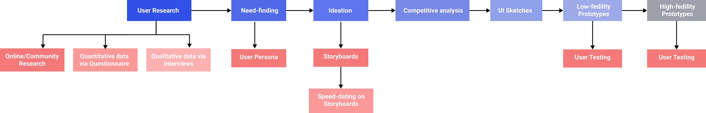
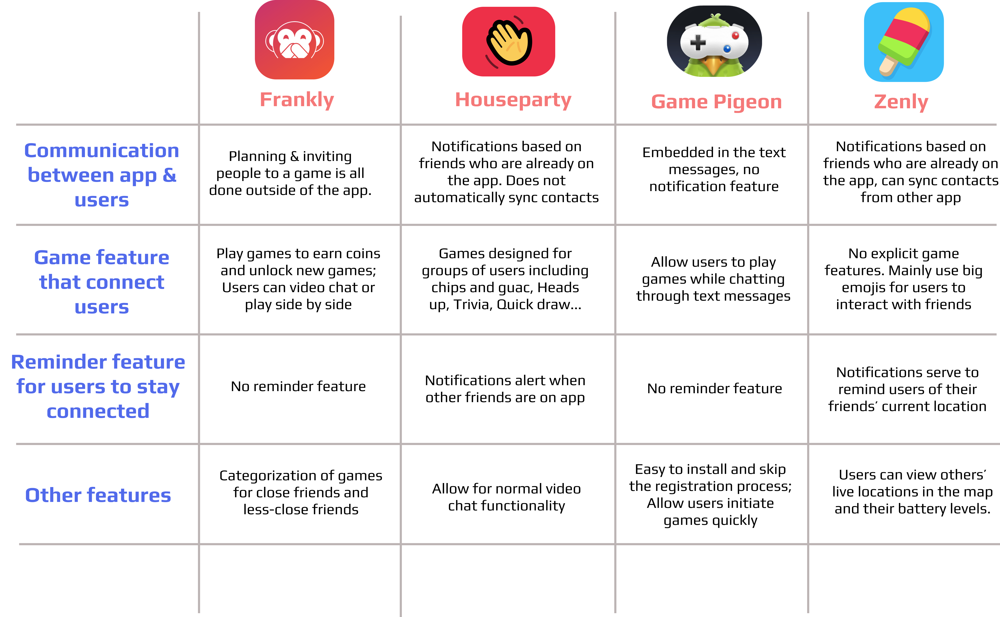
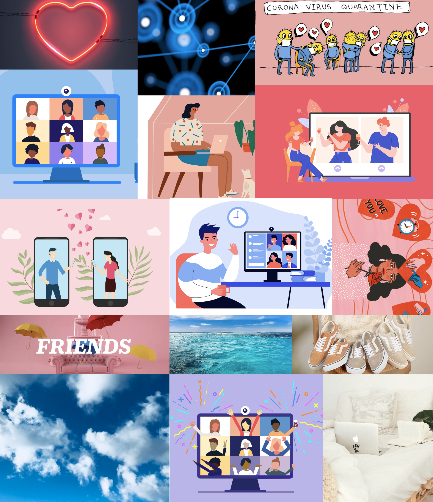
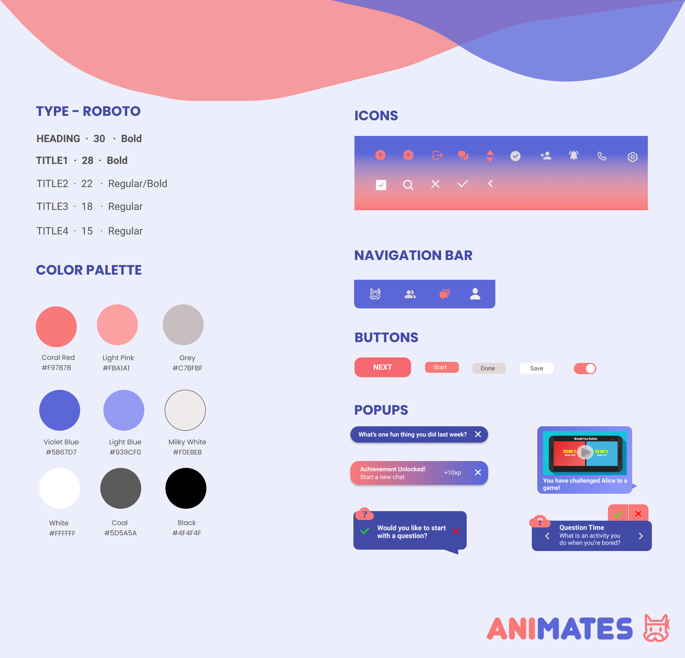
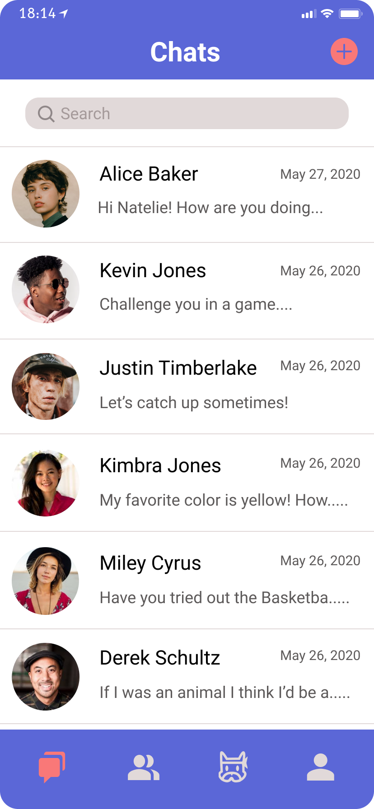
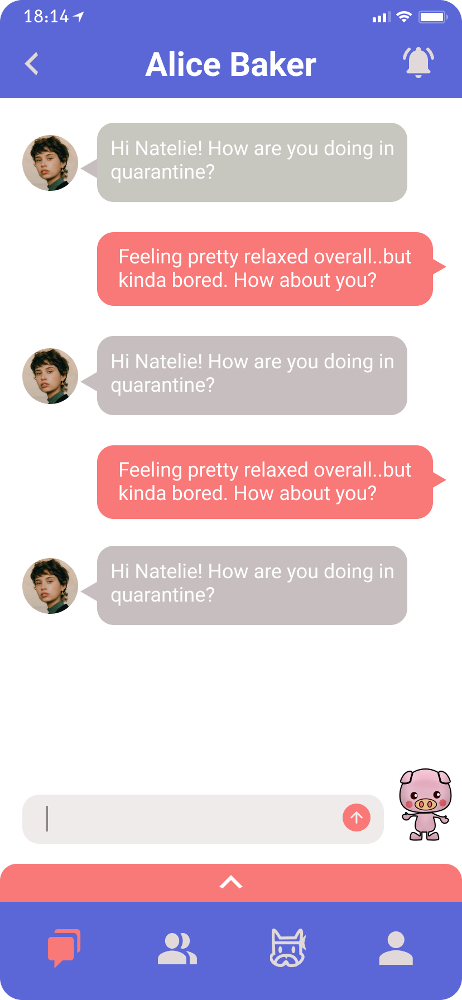
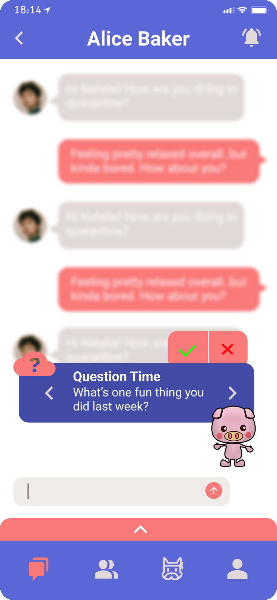

Overview
Animates is a fun, goal-oriented app that guides the conversation of the users and helps them strengthen relationships with friends and family.
During the current epidemic, people have had more time to stay connected, yet they feel more removed with their friends and loved ones. It is harder to stay in touch due to the lack of conversational topic and general lack of change in people’s daily lives. Our team designed an app that helps people reignite old relationships that may have been affected through quarantine and rebuild relationships with friends through a fun, goal-oriented game that guides the conversations of the users.
Research
The first step of our design process is to conduct online and community research to observe and narrow the problems stakeholders are experiencing. Before doing research we decided on four focuses: mental health, entertainment, how people/students were reacting to the coronavirus, and relationships during the coronavirus.
Overall Findings
- Quarantine is not helpful to mental health.
- People are becoming less motivated, procrastinating more frequently, having issues with creating a new routine.
- There are applications that exist but people may become bored with them after using them a few times
Competitor analysis

Mood Board

Style Guide

High-Fidelity Prototype
Welcome Page
Chat Menu Page
Chat Page #1
Chat Page #2